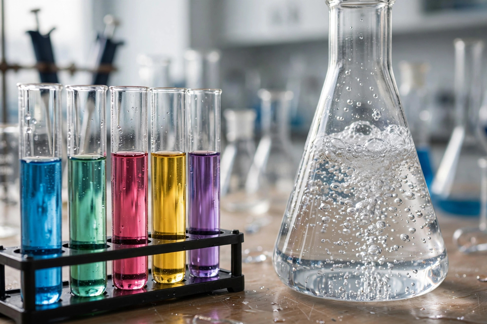

Ask any PPSC topper which section gave them the best marks-per-hour, and you'll hear the same answer: Everyday Science. Not the biggest section, not the hardest — but the most repeat-friendly. The same facts about the human body, vitamins, SI units and famous inventions have been circling PPSC, FPSC and NTS papers for years.
Most aspirants either skip science ("I'm from commerce") or read whole textbooks — both waste time. This guide gives you the middle path: the 8 topic clusters that actually repeat, how examiners frame questions from each, and a two-week plan to lock them in.
Why Everyday Science Is a Scoring Machine
In a typical PPSC one paper test, 8–12 questions come from science and everyday phenomena — potentially 10% of your paper. And unlike current affairs (which change monthly), science MCQs are static facts. Once you learn that scurvy comes from vitamin C deficiency, that fact never changes.
Examiners also love science because it's "fair" — questions are built from the same angles: which, what is the unit of, who discovered, deficiency of X causes, the largest/smallest. Learn the angles and half the work is done.
Cluster 1: The Human Body — the biggest single source
The human body is the single most repeated science topic across PPSC and FPSC papers. Examiners return to it constantly because every option feels plausible. Focus on:
- Heart & blood: chambers of the heart, normal pulse rate, blood groups (universal donor/recipient), components of blood, haemoglobin's role.
- Bones & muscles: total bones in the adult human body (206), longest bone (femur), smallest bone (stapes), strongest muscle.
- Brain & senses: largest part of the brain (cerebrum), which part controls balance, the five senses' organs.
- Digestion & respiration: where digestion begins, the role of saliva and enzymes, normal breathing rate, the gas exchanged in the lungs.
- "Largest/smallest/fastest" facts: largest organ (skin), largest bone, smallest cell, fastest nerve — examiners adore superlatives.
A practical tip: don't read anatomy chapters. Instead, solve Everyday Science MCQs and note every human-body question you get wrong — what's asked repeats itself within a few hundred questions.

Cluster 2: Vitamins, Deficiencies & Diseases
Cover vitamin A, B-complex, C, D, E and K — chemical names (ascorbic acid, retinol, calciferol), deficiency diseases (night blindness, scurvy, rickets, beriberi) and richest sources. Also keep a short list of common disease facts: viral vs bacterial causes, water-borne diseases. Examiners rarely go deep — they test one-line facts.
Cluster 3: SI Units & Measuring Instruments
Almost every PPSC paper carries 1–2 questions in this exact format: "The SI unit of ___ is ___" or "A barometer is used to measure ___". Master the SI units of length, mass, time, temperature, current, force, power, energy, pressure and frequency — plus instruments: barometer, thermometer, ammeter, voltmeter, hygrometer, seismograph, speedometer, and the microscope/telescope pair.
Cluster 4: Famous Inventions & Inventors
"Who invented the ___?" — the light bulb, telephone, printing press, steam engine, penicillin, radio, television, airplane, microscope. These questions have appeared in Pakistani competitive papers for decades. Make a table of 40–50 inventions with their inventors and revise it weekly; it's the fastest 2–3 marks you'll ever earn.
Cluster 5: Chemistry Basics — gases, acids & everyday compounds
Skip the chemistry degree — examiners test the everyday version:
- Gas facts: most abundant gas in the atmosphere, gas used in balloons, gas that supports combustion, laughing gas.
- Acids & bases: common acids (citric in lemon, acetic in vinegar), pH basics, which acid is in the stomach.
- Everyday compounds: chemical formula/name of common salt, baking soda, washing soda, plaster of Paris, quicklime.
- Metals: most abundant metal in the earth's crust, lightest metal, best conductor, metal liquid at room temperature.
Cluster 6: Physics of Everyday Life
PPSC doesn't test physics — it tests observation of the physical world. Why is the sky blue, why do stars twinkle, speed of light vs sound, AC vs DC, what a fuse does. Cover one-line explanations for 30–40 such phenomena, plus basic electricity facts (current, resistance, Ohm's law) — they bridge into Cluster 3.
Cluster 7: Earth & Space Science
Planets (nearest/farthest, largest, the red planet, the morning star), layers of the earth, earthquakes, solar and lunar eclipses, tides, the water cycle. This cluster is small but extremely consistent — at least one question from it shows up in nearly every paper. A single revision sheet covers the whole cluster.
Cluster 8: Environment, Agriculture & Food Science
Photosynthesis, greenhouse gases, the ozone layer, renewable vs non-renewable energy, common fertilizers. With growing exam attention on environment and climate, this cluster's weight is slowly increasing — worth a focused session rather than a skim.
The MCQ-First Method (How Toppers Actually Study Science)
Notice what this guide didn't recommend: reading science textbooks cover to cover. Toppers study Everyday Science backwards — MCQs first, theory only for what you get wrong:
- Attempt 100 science MCQs first. Don't revise before diagnosing — solve from our free Everyday Science practice section cold.
- Build a "fact bank" notebook. Every question you got wrong (or guessed) becomes one line: "Scurvy = vitamin C deficiency". This notebook becomes your whole revision.
- Cluster your errors. Most mistakes in Cluster 3 (units)? Give it a dedicated session instead of re-reading everything.
- Re-attempt weekly. Science facts fade fast — re-solving the same 100 MCQs a week later should take half the time.
Your 2-Week Everyday Science Revision Plan
- Days 1–4: Clusters 1 & 2 (human body + vitamins), then 3 & 4 (SI units, instruments, inventions). 200 MCQs/day, build your fact bank, make the 50-invention table.
- Days 5–8: Clusters 5 & 6 (chemistry basics + everyday physics), then 7 & 8 (earth & space + environment).
- Days 9–12: Mixed 100-MCQ timed sets daily; add every error to the fact bank.
- Days 13–14: Revise only the fact bank. Take a full mock on our exam simulator with timer and negative marking.
For the bigger picture, read our complete PPSC preparation guide and check the PPSC exam page for related books and MCQs.
- Everyday Science = 8–12 static, repeat-friendly marks per paper — best return on study hours.
- The 8 clusters: human body, vitamins & diseases, SI units, inventions, everyday chemistry, everyday physics, earth & space, environment.
- Study MCQ-first: attempt, note errors in a fact bank, re-attempt weekly.
- The four classic angles: "largest/smallest", "which gas", "who invented", "deficiency causes".
Frequently Asked Questions
How many Everyday Science questions come in the PPSC one paper exam?
Typically 8–12 questions from general ability — science is a permanent fixture of the paper.
Is Everyday Science enough to pass PPSC?
No single section is enough alone — but science converts into full marks with the least study time, which protects your overall score.
Which book is best for Everyday Science MCQs?
Caravan and Ilmi general science books are popular — but pair any book with daily MCQ solving. Our free subject-wise MCQs with explanations cover the repeated facts just as well.
Where can I practice free Everyday Science MCQs online?
Right here on MCQs Tayyari — thousands of free science MCQs with explanations, plus a full exam simulator with timer and negative marking.
Start practicing — free, no login needed
185,203+ MCQs · solved past papers · real exam simulator with timer & negative marking